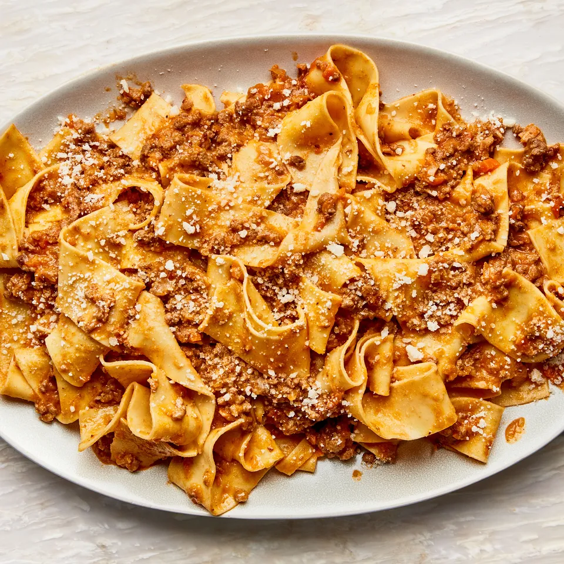

Bolognese

Description
Easy to make bolognese to feed your family. Make a bunch and save them as leftovers as they heat very easily
Ingredients
- Pasta
- Prego
- 1 large Onion
- 1 pack of mushrooms
- 1lb ground beef
Steps
- Boil the pasta alongside the rest of the steps
- Dice the onions and mushrooms
- Saute the onion and mushrooms until the onions are translucent
- Put in the ground beef and cook until browned
- Put in the prego and mix it all together
- Plate the pasta then the bolognese sauce on top and serve.